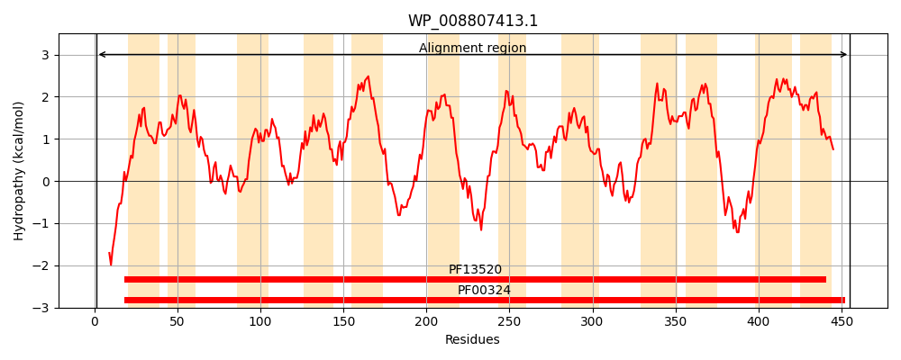
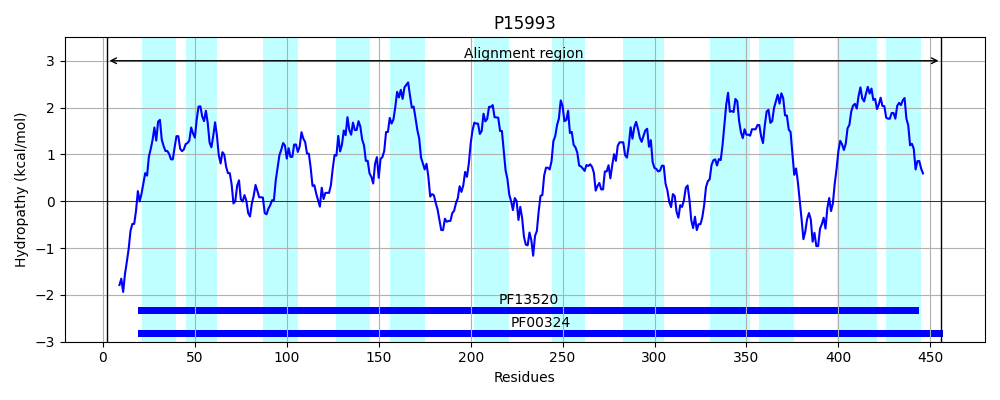
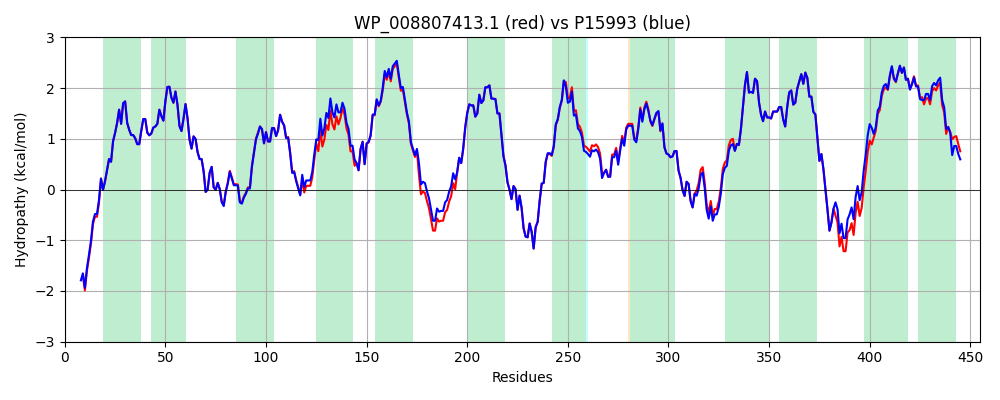

Hit Accession: P15993
Hit TCID: 2.A.3.1.3
Hit Description: gnl|BL_ORD_ID|9197 gnl|TC-DB|P15993|2.A.3.1.3 Aromatic amino acid transport protein aroP (General aromatic amino acid permease) - Escherichia coli.
Mach Len: 455
e:0.000000
Query TMS Count : 12
Hit TMS Count: 12
TMS-Overlap Score: 12.200000
Predicted Substrates:CHEBI:8089;phenylalanine, CHEBI:9769;tryptophan, CHEBI:9800;tyrosine
BLAST Alignment:
Score: 2232 , Bit scores: 864 bits, E-value: 0.0e+00, Alignment length: 455, Percentage identity: 94
Query: 1 MEGQQHGDRLKRGLKNRHIQLIALGGAIGTGLFLGSASVIQSAGPGIILGYAIAGFIAFLIMRQLGEMVVEEPVAGSFSHFAYKYWGGFAGFASGWNYWVLYVLVAMAELTAVGKYIQFWWPEIPTWASAAVFFIAINAINLTNVKVFGEMEFWFAIIKVVAVVAMILFGGWLLFSGNGGPQATVRNLWDQGGFLPHGFTGLVMMMAIIMFSFGGLELVGITAAEADNPEQSIPKATNQVIYRILIFYVGSLAVLLSLLPWTRVTADTSPFVLIFHELGDTLVANALNVVVLTAALSVYNSCVYCNSRMLFGLAQQGNAPKALLSVDKRGVPVNTILVSALVTALCVLINYLAPESAFGLLMALVVSALVINWAMISLAHMKFRRAKQQQGVTTRFPALFYPLGNWVCLLFMAAVLVIMLMTPGMAISVWLIPVWIAVLGVGYLFKQKAAATIKA 455
MEGQQHG++LKRGLKNRHIQLIALGGAIGTGLFLGSASVIQSAGPGIILGYAIAGFIAFLIMRQLGEMVVEEPVAGSFSHFAYKYWG FAGFASGWNYWVLYVLVAMAELTAVGKYIQFW+PEIPTW SAAVFF+ INAINLTNVKVFGEMEFWFAIIKV+AVVAMI+FGGWLLFSGNGGPQATV NLWDQGGFLPHGFTGLVMMMAIIMFSFGGLELVGITAAEADNPEQSIPKATNQVIYRILIFY+GSLAVLLSL+PWTRVTADTSPFVLIFHELGDT VANALN+VVLTAALSVYNSCVYCNSRMLFGLAQQGNAPKAL SVDKRGVPVNTILVSALVTALCVLINYLAPESAFGLLMALVVSALVINWAMISLAHMKFRRAKQ+QGV TRFPAL YPLGNW+CLLFMAAVLVIMLMTPGMAISV+LIPVW+ VLG+GYLFK+K A +KA
Sbjct: 2 MEGQQHGEQLKRGLKNRHIQLIALGGAIGTGLFLGSASVIQSAGPGIILGYAIAGFIAFLIMRQLGEMVVEEPVAGSFSHFAYKYWGSFAGFASGWNYWVLYVLVAMAELTAVGKYIQFWYPEIPTWVSAAVFFVVINAINLTNVKVFGEMEFWFAIIKVIAVVAMIIFGGWLLFSGNGGPQATVSNLWDQGGFLPHGFTGLVMMMAIIMFSFGGLELVGITAAEADNPEQSIPKATNQVIYRILIFYIGSLAVLLSLMPWTRVTADTSPFVLIFHELGDTFVANALNIVVLTAALSVYNSCVYCNSRMLFGLAQQGNAPKALASVDKRGVPVNTILVSALVTALCVLINYLAPESAFGLLMALVVSALVINWAMISLAHMKFRRAKQEQGVVTRFPALLYPLGNWICLLFMAAVLVIMLMTPGMAISVYLIPVWLIVLGIGYLFKEKTAKAVKA 456 | Protein Hydropathy Plots: |
|---|
|  |  |
Pairwise Alignment-Hydropathy Plot:
|
|---|
|  |